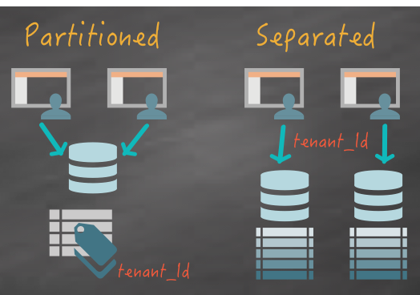

Database per Tenant Multi-Tenancy
Learn how to leverage Multi-Tenancy features of GORM to build an application using a unique database per tenant
Authors: Graeme Rocher, Sanjana
Grails Version: 8
1 Getting Started
In this guide you are going to build a Multi-Tenant application that utilizes "Database per Tenant" with Apache Grails 8 and GORM.
Database per tenant allows you to redirect different tenants (users) to different physical databases using a unique tenant identifier.
1.1 What you will need
-
Approximately 45 minutes
-
JDK 21 (Apache Grails 8 requires Java 21)
-
A text editor or IDE
-
The Gradle wrapper bundled in
initial/andcomplete/ -
Docker (optional, for Geb functional tests via Testcontainers)
1.2 How to complete the guide
Clone the companion and start from initial/:
git clone -b grails8 https://github.com/grails-guides/database-per-tenant.git
cd database-per-tenant/initial
./gradlew testinitial/ is a Grails 8 web starter with multi-tenancy mode, SessionTenantResolver, and audi/ford datasources already configured. You will add domains, services, controllers, views, and tests. To skip ahead, use complete/.
2 Writing the Application
The starter already pins Apache Grails 8 in gradle.properties:
grailsVersion=8.0.0-M5
version=0.1
org.gradle.caching=true
org.gradle.daemon=true
org.gradle.parallel=true
org.gradle.jvmargs=-Dfile.encoding=UTF-8 -Xmx1024M2.1 Setup Multi-Tenancy
2.1.1 The Multi-Tenancy Mode
In order to use Multi-Tenancy you need to setup the Multi-Tenancy mode that GORM uses, given that three distinct modes are supported:
-
DATABASE - Use a distinct database connection per tenant
-
SCHEMA - Use a single database, but different physical schemas per tenant
-
DISCRIMINATOR - Use a single database, but partition the data using a discriminator column
Generally DATABASE and SCHEMA modes can both be considered to be physically separated, whilst DISCRIMINATOR mode requires more care since different tenants' data is stored in the same physical database:

In this case the required Multi-Tenancy mode is DATABASE and it can be configured using the grails.gorm.multiTenancy.mode setting:
grails:
gorm:
multiTenancy:
mode: DATABASE
tenantResolverClass: org.grails.datastore.mapping.multitenancy.web.SessionTenantResolver2.1.2 The TenantResolver
Note that, in addition to the mode, the above example configures the tenantResolverClass to use to resolve the tenant.
The tenantResolverClass is a class that implements the TenantResolver interface.
Included within GORM there are several built-in TenantResolver implementations including:
| Type | Description |
|---|---|
Resolves the tenant id from the HTTP session using an attribute called |
|
Resolves the tenant id from the HTTP cookie using an attribute called |
|
Resolves the tenant id from the current sub-domain. For example if the subdomain is |
|
Resolves the tenant id from a system property called |
The above implementations are useful to have out-of-the-box, however GORM is flexible and you can implement your own strategy by implementing the TenantResolver interface.
For example if you are using Spring Security you could write a TenantResolver that resolves the tenant id from the currently logged in user.
|
For this example we are going to be using SessionTenantResolver and storing the tenant id within the current user session.
2.1.3 Multiple Data Sources
Apart from the default dataSource, we configure two additional data sources
audi and ford for each of the tenants:
dataSource:
driverClassName: org.h2.Driver
username: sa
password: ''
pooled: true
jmxExport: true
dbCreate: create-drop
url: jdbc:h2:mem:devDb;LOCK_TIMEOUT=10000;DB_CLOSE_ON_EXIT=FALSE
dataSources:
ford:
dbCreate: create-drop
url: jdbc:h2:mem:fordDb;LOCK_TIMEOUT=10000;DB_CLOSE_ON_EXIT=FALSE
audi:
dbCreate: create-drop
url: jdbc:h2:mem:audiDb;LOCK_TIMEOUT=10000;DB_CLOSE_ON_EXIT=FALSEThe names of the data sources correspond to the tenant ids that the configured TenantResolver should return.
If the default data source can also be considered a tenant then the value of ConnectionSources.DEFAULT should be returned as the tenant id.
|
2.2 Creating the Domain Classes
When creating domain classes for your application you will typically have domain classes that are Multi-Tenant and others that are not.
For domain classes which won’t be using Multi-Tenancy simply define them as you would normally do and they will be mapped to the default dataSource.
For this example the Manufacturer will be the provider of tenant ids. The name of the Manufacturer will be used as the tenant id allowing access to each configured database:
package demo
class Manufacturer {
String name
static constraints = {
name blank: false
}
}Next step is to define domain classes that can only be accessed by a given tenant:
package demo
import grails.gorm.MultiTenant
class Engine implements MultiTenant<Engine> { (1)
Integer cylinders
static constraints = {
cylinders nullable: false
}
}package demo
import grails.gorm.MultiTenant
class Vehicle implements MultiTenant<Vehicle> { (1)
String model
Integer year
static hasMany = [engines: Engine]
static mapping = {
year column: '`year`'
}
static constraints = {
model blank: false
year min: 1980
}
}| 1 | Both domain class implement the MultiTenant trait |
The Vehicle and Engine domain classes both implement the MultiTenant trait which results in GORM resolving the database to use from the resulting tenant id returned from the configured TenantResolver.
On modern H2, year is a reserved word, so Vehicle maps the column as .
|
2.3 Setup Test Data
To setup some test data you can modify the Application class to implement the ApplicationRunner interface to run transactional logic on startup:
package demo
import grails.boot.GrailsApp
import grails.boot.config.GrailsAutoConfiguration
import org.springframework.boot.ApplicationArguments
import org.springframework.boot.ApplicationRunner
import grails.gorm.transactions.Transactional
import groovy.transform.CompileStatic
@CompileStatic
class Application extends GrailsAutoConfiguration implements ApplicationRunner { (1)
static void main(String[] args) {
GrailsApp.run(Application, args)
}
@Override
@Transactional
void run(ApplicationArguments args) throws Exception { (2)
Manufacturer.saveAll( (3)
new Manufacturer(name: 'Audi'),
new Manufacturer(name: 'Ford')
)
}
}| 1 | Implement the ApplicationRunner interface |
| 2 | Mark the run method as transactional with @Transactional |
| 3 | Use saveAll to save two Manufacturer instances |
In the example above two Manufacturer instances are saved that will correspond to the two tenants supported by this application. The names Audi and Ford are used and correspond to the names of the data sources configured in grails-app/conf/application.yml.
2.4 Implementing Tenant Selection
The first step to supporting Multi-Tenancy in your application is implementing some form of tenant selection. This could be to resolve the tenant via a DNS subdomain, or it could be part of your applications registration process if you are using authentication with Spring Security.
To keep things simple for the example we are going to implement a simple mechanism that provides a UI to store the tenantId within the users HTTP session.
First create grails-app/controllers/demo/ManufacturerController.groovy with ./grailsw create-controller demo.Manufacturer or your preferred IDE.
Next modify UrlMappings.groovy to map the root of the application to the index action, and map /manufacturer/$id to select (the completed sample does not keep the default /$controller/$action/$id mapping):
'/'(controller: 'manufacturer')
"/manufacturer/$id"(controller: 'manufacturer', action: 'select')Then define an index action that lists of all the Manufacturers and renders the grails-app/views/index.gsp view.
package demo
import org.grails.datastore.mapping.multitenancy.web.SessionTenantResolver
import grails.gorm.transactions.ReadOnly
import groovy.transform.CompileStatic
@CompileStatic
class ManufacturerController {
@ReadOnly
def index() {
render view: '/index', model: [manufacturers: Manufacturer.list()]
}
}Within the grails-app/views/index.gsp file, simply iterate through each result and create a link to the select action
<div id="controllers" role="navigation">
<h2>Available Manufacturers:</h2>
<ul>
<g:each var="m" in="${manufacturers}">
<li class="controller">
<g:link controller="manufacturer" action="select" id="${m.name}">${m.name}</g:link>
</li>
</g:each>
</ul>
</div>The select action, selects the current tenant and stores the tenant within the current user’s HTTP session:
@ReadOnly
def select(String id) {
Manufacturer m = Manufacturer.where {
name == id
}.first() (1)
if (m) {
session.setAttribute(SessionTenantResolver.ATTRIBUTE, m.name.toLowerCase()) (2)
redirect controller: 'vehicle' (3)
}
else {
render status: 404
}
}| 1 | Fetches a Manufacturer identified by the supplied id |
| 2 | The selected tenant is stored within a session attribute. |
The select action will find a Manufacturer and store the name of the Manufacturer (in lower case so it corresponds to a configured data source) as the current tenant within the HTTP session.
This causes SessionTenantResolver to resolve the correct tenant id from the HTTP session.
Finally, to improve error handling you can map every occurrence of TenantNotFoundException to redirect back to the list of manufacturers:
'500'(controller: 'manufacturer', exception: TenantNotFoundException)With these changes in place you will be able to select each tenant from the homepage.
Now that it is possible to select a tenant, let’s create logic that is able to use the currently active tenant.
2.5 Writing Multi-Tenant Aware Data Logic
One of the challenges with regards to building an application that uses a unique database connection per tenant is that you have the manage multiple persistence contexts in a scalable manner.
It would not scale to bind a Hibernate session for each and every tenant to each request that came into the application, so you have to be able to write logic that takes into account the fact that the Hibernate session you are using to access the current tenant’s data is not currently bound to the current controller action’s execution.
To make this challenge simpler GORM features a set of Multi-Tenancy transformations including:
| Type | Description |
|---|---|
Resolves the current tenant and binds a Hibernate session for the scope of the method |
|
Resolves a specific tenant and binds a Hibernate session for the scope of the method |
|
Execute some logic within a method without a tenant present |
These should generally be applied to services in a Grails application and they work really well when combined with GORM Data Services.
To implement the logic to save and retrieve Vehicle instances create a new grails-app/services/demo/VehicleService.groovy file and annotate it within the CurrentTenant and Service annotations:
import grails.gorm.multitenancy.CurrentTenant
import grails.gorm.services.Join
import grails.gorm.services.Service
import grails.gorm.transactions.Transactional
import groovy.transform.CompileStatic
@Service(Vehicle) (1)
@CurrentTenant (2)
@CompileStatic
abstract class VehicleService {
}| 1 | The Service transformation will ensure any abstract methods that can be implemented by GORM are implemented |
| 2 | The CurrentTenant transformation will ensure any method that is executed on the service resolves the current tenant first and binds a Hibernate session for the resolved database connection. |
The class is abstract because many of the methods will be implemented for you by GORM.
|
Now lets take a look at how to implement querying logic for a Multi-Tenant application.
2.5.1 Executing Multi-Tenant Aware Queries
To implement Multi-Tenant queries in a GORM Data Service simply add abstract methods that correspond to one of the supported conventions in GORM:
@Join('engines') (1)
abstract List<Vehicle> list(Map args) (2)
abstract Integer count() (3)
@Join('engines')
abstract Vehicle find(Serializable id) (4)| 1 | Each query method is annotated with @Join |
| 2 | The list method returns a list of Vehicle instances and takes optional arguments as a map to perform pagination |
| 3 | The count method counts the number of Vehicle instances |
| 4 | The find method finds a single Vehicle by id |
The usage of @Join warrants further explanation. Recall that in a Multi-Tenant application a new Hibernate session is created for the connection found for the current tenant id.
Once the method completes however, this session is closed which means that any associations not loaded by the query could lead to a LazyInitializationException due to the closed session.
It is therefore critical that your queries always return the data that is required to render the view. This typically leads to better performing queries anyway and will in fact help you design a better performing application.
The @Join annotation is a simple way to achieve a join query, but in some cases it may be simpler to use a JPA-QL query.
Now it is time to write a controller that can use these newly defined methods. First, create grails-app/controllers/demo/VehicleController.groovy with ./grailsw create-controller demo.Vehicle or your preferred IDE.
The VehicleController should define a property referencing the previously created VehicleService:
import static org.springframework.http.HttpStatus.NOT_FOUND
import grails.gorm.multitenancy.CurrentTenant
import grails.validation.ValidationException
import groovy.transform.CompileStatic
@CompileStatic
class VehicleController {
static allowedMethods = [save: 'POST', update: 'PUT', delete: 'DELETE']
VehicleService vehicleService
...
}Now generate default GSP views for Vehicle:
./grailsw generate-views demo.VehicleNext add an entry into the UrlMappings.groovy file to map the /vehicles URI:
'/vehicles'(resources: 'vehicle')Now you are ready to add the query logic to read Vehicle instances for each tenant. Update VehicleController with the following read operations:
def index(Integer max) {
params.max = Math.min(max ?: 10, 100)
respond vehicleService.list(params), model: [vehicleCount: vehicleService.count()]
}
def show(Long id) {
Vehicle vehicle = id ? vehicleService.find(id) : null
respond vehicle
}
@CurrentTenant
def create() {
respond new Vehicle(params)
}
@CurrentTenant
def edit(Long id) {
show id
}The index and show actions use the VehicleService to locate Vehicle instances. create and edit instantiate a MultiTenant domain class, so they are annotated with @CurrentTenant. The VehicleService will ensure the correct tenant is resolved and the correct data returned for each tenant.
2.5.2 Executing Multi-Tenant Updates
To add logic to perform write operations you can simply modify the VehicleService and add new abstract methods for save and delete:
abstract Vehicle save(String model,
Integer year)
abstract Vehicle delete(Serializable id)The above save and delete methods will be implemented automatically for you.
GORM Data Services are smart about adding appropriate transaction semantics to each method (for example, readOnly for read operations). However you can override the transaction semantics by adding the @Transactional annotation yourself.
|
To implement updates you can add a new method that calls the existing abstract find method:
@Transactional
Vehicle update(Serializable id, (5)
String model,
Integer year) {
Vehicle vehicle = find(id)
if (vehicle != null) {
vehicle.model = model
vehicle.year = year
vehicle.save(failOnError: true)
}
vehicle
}This demonstrates an important concept of GORM Data Services: It is possible to easily mix methods you define with ones that are automatically implemented for you by GORM.
The corresponding controller actions to call VehicleService and expose these write operations are also trivial:
def save(String model, Integer year) {
try {
Vehicle vehicle = vehicleService.save(model, year)
flash.message = 'Vehicle created'
redirect vehicle
} catch (ValidationException e) {
respond e.errors, view: 'create'
}
}
def update(Long id, String model, Integer year) {
try {
Vehicle vehicle = vehicleService.update(id, model, year)
if (vehicle == null) {
notFound()
}
else {
flash.message = 'Vehicle updated'
redirect vehicle
}
} catch (ValidationException e) {
respond e.errors, view: 'edit'
}
}
protected void notFound() {
flash.message = 'Vehicle not found'
redirect uri: '/vehicles', status: NOT_FOUND
}
def delete(Long id) {
Vehicle vehicle = vehicleService.delete(id)
if (vehicle == null) {
notFound()
}
else {
flash.message = 'Vehicle Deleted'
redirect action: 'index', method: 'GET'
}
}3 Multi-Tenancy Unit Testing
Testing controller logic that uses Multi-Tenancy requires special considerations.
GORM makes it relatively simple to write unit tests.
To write a unit test for the VehicleController class create a new src/test/groovy/demo/VehicleControllerSpec.groovy Spock specification:
@Stepwise
@RestoreSystemProperties
class VehicleControllerSpec extends HibernateSpec implements ControllerUnitTest<VehicleController> {
...
}As you can see above the test extends HibernateSpec.
To make testing simpler override the tenantResolverClass by overriding the getConfiguration() method of HibernateSpec:
@Override
Map getConfiguration() {
[(Settings.SETTING_MULTI_TENANT_RESOLVER_CLASS): SystemPropertyTenantResolver]
}This will allow you to use SystemPropertyTenantResolver for changing the tenant id within the test.
Next step is to provide a setup method that configures the VehicleService for the controller:
VehicleService vehicleService (1)
def setup() {
System.setProperty(SystemPropertyTenantResolver.PROPERTY_NAME, 'audi') (2)
vehicleService = hibernateDatastore.getService(VehicleService) (3)
controller.vehicleService = vehicleService (4)
}| 1 | Define a vehicleService as a property of the unit test |
| 2 | Set the tenant id to audi for the purposes of the test |
| 3 | Lookup the VehicleService implementation from GORM |
| 4 | Assign the VehicleService to the controller under test |
To ensure proper cleanup you should also clear the tenant id in a cleanup method:
def cleanup() {
System.setProperty(SystemPropertyTenantResolver.PROPERTY_NAME, '')
}With that done it is trivial to test the controller logic, for example to test the index action with no data:
void 'Test the index action returns the correct model'() {
when: 'The index action is executed'
controller.index()
then: 'The model is correct'
!model.vehicleList
model.vehicleCount == 0
}You can also write tests to test the case where no tenant id is present by clearing the tenant id:
void 'Test the index action with no tenant id'() {
when: 'there is no tenant id'
System.setProperty(SystemPropertyTenantResolver.PROPERTY_NAME, '')
controller.index()
then:
thrown(TenantNotFoundException)
}Testing more complex interactions like saving data is possible too:
void 'Test the save action correctly persists an instance'() {
when: 'The save action is executed with an invalid instance'
request.contentType = FORM_CONTENT_TYPE
request.method = 'POST'
controller.save('', 1900)
then: 'The create view is rendered again with the correct model'
model.vehicle != null
view == 'create'
when: 'The save action is executed with a valid instance'
response.reset()
controller.save('A5', 2011)
then: 'A redirect is issued to the show action'
response.redirectedUrl == '/vehicles/1'
controller.flash.message != null
vehicleService.count() == 1
}Note that within the assertions of the above test we use the vehicleService which makes sure the correct database connection is used when making the assertion.
4 Functional Tests
We map the CRUD pages with Geb page objects:
package demo
import geb.Page
class ManufacturersPage extends Page {
static at = { $('h2').text().contains('Available Manufacturers') }
static content = {
audiLink { $('a', text: 'Audi') }
fordLink { $('a', text: 'Ford') }
}
void selectAudi() {
audiLink.click()
}
void selectFord() {
fordLink.click()
}
}package demo
import geb.Page
class NewVehiclePage extends Page {
static at = { title.contains('Create Vehicle') }
static content = {
inputModel { $('input', name: 'model') }
inputYear { $('input', name: 'year') }
createButton { $('input', name: 'create') }
}
void newVehicle(String model, int year) {
inputModel << model
inputYear = year
createButton.click()
}
}package demo
import geb.Page
class ShowVehiclePage extends Page {
static at = { title.contains('Show Vehicle') }
static content = {
listButton { $('a', text: 'Vehicle List') }
}
void vehicleList() {
listButton.click()
}
}package demo
import geb.Page
class VehiclesPage extends Page {
static at = { title.contains('Vehicle List') }
static content = {
newVehicleLink { $('a', text: 'New Vehicle') }
vehiclesRows { $('tbody tr') }
}
void newVehicle() {
newVehicleLink.click()
}
int numberOfVehicles() {
vehiclesRows.size()
}
}We test tenant selection with a ContainerGebSpec functional test (requires Docker / Testcontainers):
package demo
import grails.plugin.geb.ContainerGebSpec
import grails.testing.mixin.integration.Integration
import spock.lang.IgnoreIf
@Integration
@IgnoreIf({ !System.getenv('CI') && !isDockerAvailable() })
class TenantSelectionFuncSpec extends ContainerGebSpec {
private static boolean isDockerAvailable() {
try {
def process = ['docker', 'info'].execute()
process.waitFor()
return process.exitValue() == 0
} catch (Exception ignored) {
return false
}
}
def "it is possible to change tenants and get different lists of vehicles"() {
when:
to ManufacturersPage
then:
at ManufacturersPage
when:
page.selectAudi()
then:
at VehiclesPage
when:
page.newVehicle()
then:
at NewVehiclePage
when:
page.newVehicle('A5', 2000)
then:
at ShowVehiclePage
when:
page.vehicleList()
then:
at VehiclesPage
page.numberOfVehicles() == 1
when:
page.newVehicle()
then:
at NewVehiclePage
when:
page.newVehicle('A3', 2001)
then:
at ShowVehiclePage
when:
page.vehicleList()
then:
at VehiclesPage
page.numberOfVehicles() == 2
when:
to ManufacturersPage
then:
at ManufacturersPage
when:
page.selectFord()
then:
at VehiclesPage
when:
page.newVehicle()
then:
at NewVehiclePage
when:
page.newVehicle('KA', 1996)
then:
at ShowVehiclePage
when:
page.vehicleList()
then:
at VehiclesPage
page.numberOfVehicles() == 1
}
}There is also a non-browser integration test that proves tenant isolation with Tenants.withId:
package demo
import grails.gorm.multitenancy.Tenants
import grails.testing.mixin.integration.Integration
import spock.lang.Specification
@Integration
class TenantIsolationIntegrationSpec extends Specification {
VehicleService vehicleService
void 'vehicles created for one tenant are not visible to another'() {
when: 'create a vehicle in the audi tenant'
Long audiId = Tenants.withId('audi') {
vehicleService.save('A5', 2011).id
}
then:
Tenants.withId('audi') {
vehicleService.count() == 1
vehicleService.find(audiId)?.model == 'A5'
}
when: 'switch to the ford tenant'
then: 'audi data is not visible'
Tenants.withId('ford') {
vehicleService.count() == 0
vehicleService.find(audiId) == null
}
when: 'create a ford vehicle'
Long fordId = Tenants.withId('ford') {
vehicleService.save('KA', 1996).id
}
then:
Tenants.withId('ford') {
vehicleService.count() == 1
vehicleService.find(fordId)?.model == 'KA'
}
cleanup:
Tenants.withId('audi') {
if (audiId) {
vehicleService.delete(audiId)
}
}
Tenants.withId('ford') {
if (fordId) {
vehicleService.delete(fordId)
}
}
}
}5 Running the Application
To run the application use the ./gradlew bootRun command which will start the application on port 8080.
Now perform the following steps:
-
Navigate to the home page and select "Audi"
-
Enter data for a
Vehicleto create a newVehicle -
Note that the data will be created within the
audidatabase.
If you then navigate back to the homepage and select "Ford" the current tenant is switched and you can see that if you view the data for the Vehicles for "Ford" the application is now using the ford database, effectively isolating the data between the two tenants.
6 Do you need help with Grails?
Help with Apache Grails
Apache Grails is supported by an active community of contributors and the Apache Software Foundation. If you need help working through a guide, want to discuss the framework, or have run into something that looks like a bug, the channels below are the right place to start.
-
Slack - real-time conversation with the Apache Grails community.
-
Developer mailing list - design discussions and contributor coordination.
-
Users mailing list - end-user questions and answers.
-
Issue tracker on GitHub - file a bug or feature request against the framework.
For Grails plugins, see the matching project on the apache org or the plugin’s own GitHub repository.